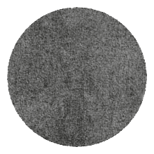

biaserAn audio tool. Nothing more.
"biaser exists to make sound - alive, shifted, imperfect, living its moment only once."
biaser generates ambient music. The idea is inspired by generative music: music that assembles itself, without a composer deciding in the moment what to play next.
Inside biaser, the music is made of many short, looped sound fragments (layers) playing simultaneously, overlapping like layers in an audio collage. They never play in sync and constantly drift slightly relative to each other. Hence the name: biaser comes from the word bias - a shift or offset. The app literally does what it promises: it shifts. And because of this continuous drift, the moment playing right now exists only now and will never happen again.
You choose one of five moods: they are represented by color, not words. Which sound combination was assigned to which color was something I decided myself, rather arbitrarily and subjectively: to me, this one felt like red, and that one felt like blue. You might feel differently. This is perhaps the only place in biaser where my hand is visible: a small island of order in the middle of a stream of randomness. After that, the app decides everything on its own. You have almost no control, and that is the point.
There is no "play that same music again" here. Every launch of biaser exists once and disappears with the session: nothing is saved, nothing is remembered.
All sounds in biaser are chosen and tuned to sound soft, dreamy, slightly melancholic, and spacious — unhurried, without harsh or uncomfortable moments. Sometimes it will just be something playing in the background. Other times, it will be the exact sound you needed right now, at this minute, in this mood. biaser doesn't try to guess in advance which one will happen. It is just sound and chance. But sometimes chance hits the moment, and then it stops being just chance.
Every moment of our lives is lived once and never returns, no matter how much we might want it to. biaser tries, however clumsily, to equalize music and the listener in this regard. The sound here isn't a recorded track: it, too, lives its moment once and cannot repeat it, even if it wanted to. Even if it had a will, the algorithms wouldn't allow it - just as we cannot bring back a moment already lived.
Next comes what partly breaks the magic. If you'd rather not know how the trick works, you can stop here and just listen. If you're curious, here is what's inside.
biaser has five moods, each with its own color: red, orange, yellow, green, blue. Behind each color are several pre-assembled sound variants, 16 in total across all moods. When a mood is selected, one of these variants is chosen at random.
Each variant consists of 22 sound layers playing simultaneously: something like 22 separate vinyl records placed on a turntable at the same time, each at its own speed. Each layer has three cycle length options (from 18 to 50 seconds), and upon launch, one of the three is randomly selected for each layer. The numbers themselves are intentionally "imperfect" - without round values or common denominators - so that the layers take as long as possible to return to the same combination. Additionally, each layer starts playing not from the beginning of its cycle, but from a random point within it, meaning even the same set of layers sounds different from the very first second.
On the musical side, each layer belongs to one of four "instruments": drone (a sustained background hum), pad (soft, lingering chords), piano, and voice. Each instrument has between 3 and 5 prepared sound variations, and one is randomly chosen upon launch.
In total, this yields a vast number of possible combinations - so vast that hearing the exact same sound twice is virtually impossible. Settings are not saved anywhere: close the app, lose the session forever.
During playback, the screen shows the progress of each of the 22 layers: thin bars filling up, each at its own pace. Beneath each bar sits the only control element: a cycle length toggle button. It has three states, drawn like a dot-counting pattern: a dot in a circle (shortest), a dash as if two dots (medium), and a triangle as if three dots (longest).
There is nothing else to control. There is meaning in that, too.
If you'd like to support this independent project, feel free to buy me a coffee.
SUPPORT VIA KO-FI- end of document -